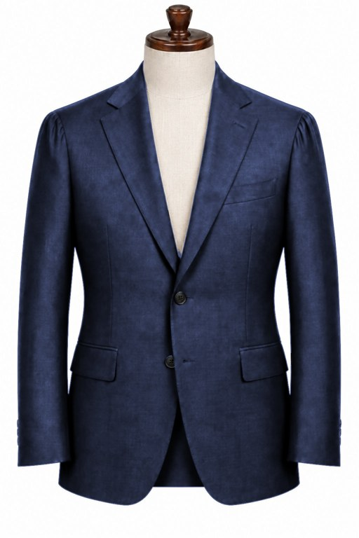
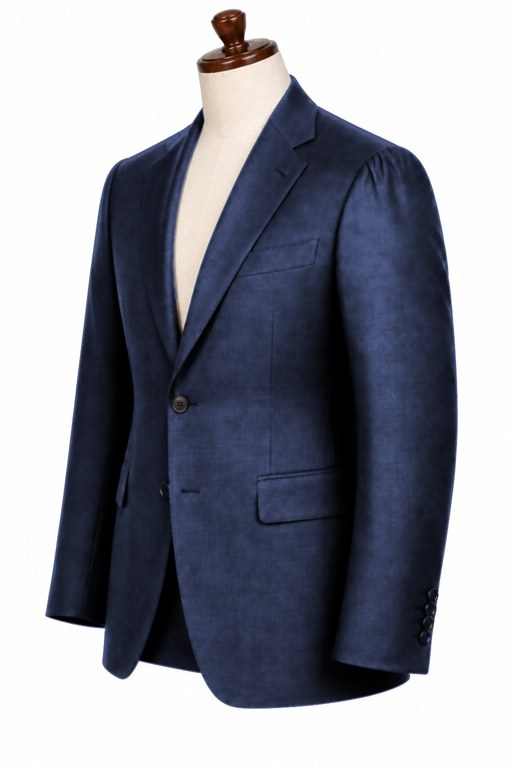
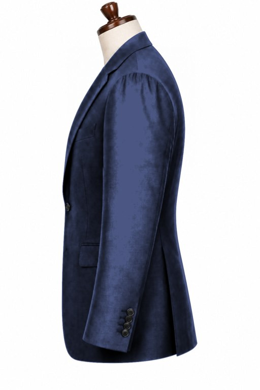
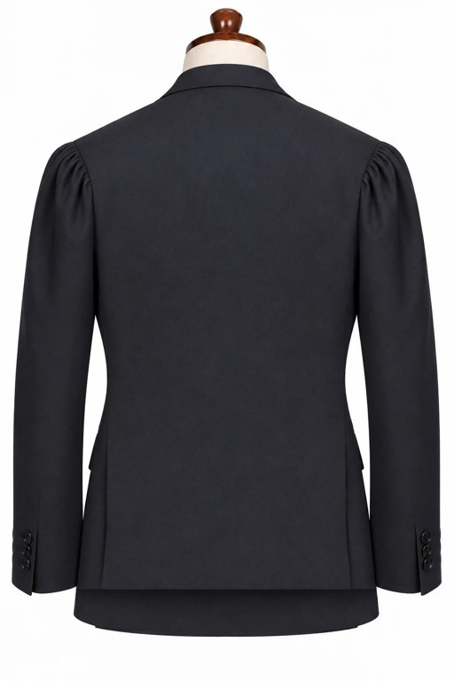
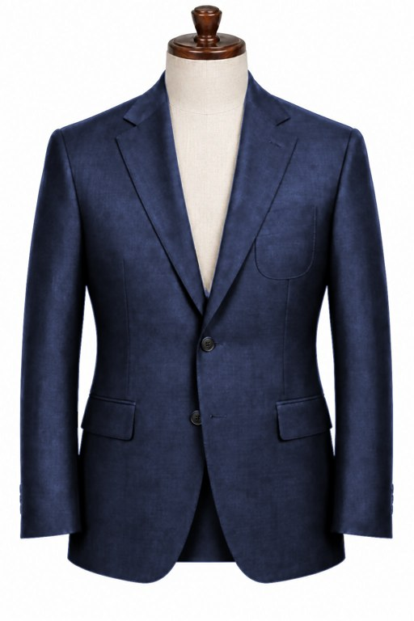
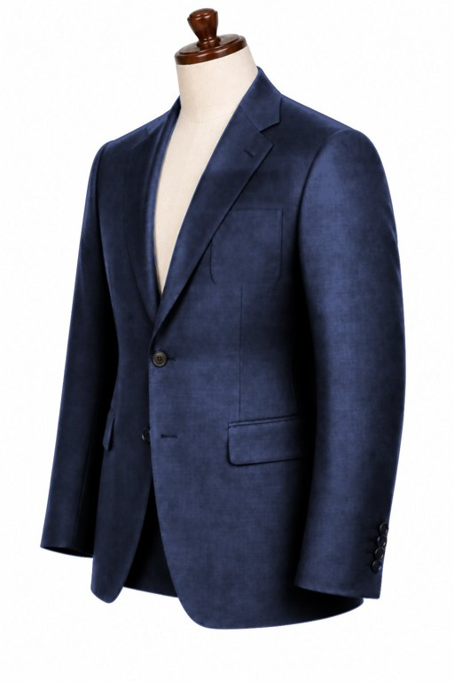

Photos needed: shirt head (3) and four chest pockets (12)
Each picture in the designer comes from a real photo of that detail from that angle. These are the photos still missing for the stand-ins you listed. Once they arrive I lay each one onto every jacket, as with the shoulders, and put the sheets here first.
Part 1: Shirt head (E), 3 photos
Natural, Con rollino and Neapolitan were each made from a real photo of that shoulder from that angle. For shirt head there is only the Back photo, so Front, Three-quarter and Side each need one photo, shot exactly like the Neapolitan photos below, with only the shoulder changed to shirt head.




For all three
- Same mannequin, angle, light and framing as the reference above (these are the Neapolitan shoulder photos already in the designer).
- Same jacket: notch lapel, single-breasted 2 buttons, flap pockets, straight welt chest pocket, plain navy cloth, white background.
- Only the shoulder changes: the shirt head, puffed like your Back photo.
- 1024 x 1536 px, portrait, like the others.
- File names (as on the master photo list, section (d)): front_front-2_lapel-BK_shoulder-E.jpg, three4_front-2_lapel-BK_shoulder-E.jpg, side_front-2_lapel-BK_shoulder-E.jpg
Part 2: Chest pockets, 12 photos (4 pockets, each from Front, Three-quarter and Side)
Pockets: 233 Tulip Shape Patch, 234 Two Inverted Pleated with Basic Flaps (one pocket on each side of the chest), BE Angled Box Pleat Patch, C1 Multi-Pleated Patch.


- Shoot like these chest-pocket photos already in the designer: same mannequin, angle, light and framing.
- Same jacket: notch lapel, single-breasted 2 buttons, flap pockets, plain navy cloth, white background; only the chest pocket changes.
- 1024 x 1536 px, portrait.
- File names (master photo list, section (c)): front_chest-233.jpg, three4_chest-233.jpg, side_chest-233.jpg, and the same with 234, BE and C1 (12 files).
Links are fine if attachments don't come through.